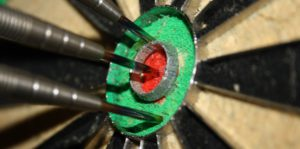

Objectives and Key Results – Objetivos y resultados clave
Los OKR son una metodología de gestión que ayuda a asegurar que todos los miembros de una organización se centra en los mismos temas importantes, entendiendo al mismo tiempo cuales son los temas que no son importantes. Los OKR nacen en intel y fueron popularizados por Google.
Objetivo: Responde al QUÉ hay que lograr, debe ser concreto, trascendente, inspirar y llamar a la acción. Siempre debemos empezar con una pregunta: ¿Qué es lo más importante para los xxx meses siguientes?, esto nos permite descartar muchas distracciones y enfocarnos en lo que realmente importa.
- - Expresan los objetivos y las intenciones.
- - Son agresivos, pero realistas.
- - Tienen que ser tangibles, imparciales e inequívocos; si el objetivo se ha cumplido tiene que resultar obvio para un observador racional.
- - La consecución exitosa de un objetivo debe proporcionar un valor claro a la compañía.
Resultado Clave: Son el CÓMO se va a lograr ese objetivo permitiéndonos monitorear nuestro avance en el camino correcto. Los resultados clave deben ser específicos, establecer un tiempo para su consecución, deben ser agresivos y, al mismo tiempo, realistas. Y lo más importante, deben ser medibles y verificables (se cumple o no se cumple). Este seguimiento que se le da a los resultados claves nos permiten basarnos en los datos para definir las responsabilidades e impulsa la evaluación de los objetivos lo cual nos permite un replanteamiento continuo, ya que sabemos hacia donde vamos, podemos cambiar de camino para alcanzar el objetivo de la mejor manera.
Al completar todos los resultados claves de un determinado objetivo, se alcanza el objetivo obligatoriamente, si no es así significa que los OKR no se diseñaron de una forma correcta desde un principio.
- - Expresan hitos en el camino que de alcanzarse harán que el objetivo progrese de manera útil para quienes están involucrados en él.
- - Deben describir resultados, no actividades. Si tus resultados clave incluyen palabras como “Consultar”, “ayudar”, “analizar” o “participar”, están describiendo actividades. Describe en su lugar el impacto final que esas actividades tendrán.
¿Por qué deben ser difíciles los objetivos?
Los objetivos difíciles producen un resultado más alto e impulsan el rendimiento de forma más efectiva que si nos propusiéramos unos objetivos fáciles de alcanzar, los cuales nos dejan atrapados en nuestra soca de confort, ya que simplemente debemos hacer lo mismo que siempre, renunciando al gran potencial que se esconde un una organización que lucha por un objetivo ambicioso.
¿Los OKR deben ser públicos?
Aparte que sirve como motivación que le permite a los equipos saber que su trabajo contribuye directamente a alcanzar los objetivos generales de la compañía, permiten también una mejor articulación entre distintos grupos, ya que todos pueden visualizar y entender como se relaciona la consecución de los objetivos por parte de un grupo que otro pueda alcanzar los suyos, y en caso que se presente un problema, se pueden enfocar un número mayor de recursos ya que todos estaremos en sintonía con un propósito superior al propio.
¿Cómo puedo puntuar mis objetivos?
Escala de 0 a 1.
0,7 a 1,0 = Verde. (Objetivo cumplido.)
0,4 a 0,6 = amarillo. (El objetivo no se cumplió en un 100% pero se considera como un buen resultado.)
0,0 a 0,3 = rojo. (No se cumplió con el objetivo.)
¿Y después qué?
Posterior a realizar la puntuación de los OKR se debe hacer una reflexión por parte de cada miembro la compañía, en la cual nos debemos preguntar si nuestros objetivos fueron lo suficientemente agresivos, si estos siguen siendo relevantes para el próximo ciclo.
¿He logrado cumplir todos mis objetivos?
¿Qué ha contribuido a ese resultado?
¿Qué obstáculos he encontrado?
¿Qué cambiaria en mis objetivos si tuviera que reformularlos?
¿Que he aprendido para mejorar mi enfoque para el siguiente ciclo de OKR?
Recuerde que los OKR deben estar en constante revisión y están abiertos al cambio incluso en medio de un ciclo, que es es mejor corregir el camino que llegar a un lugar que no se planeo.
Tips para plantear unos buenos OKR
Su objetivo debe caber en una sola linea.
Si los redactó en 5 minutos probablemente no son buenos.
Los resultados clave deben ser cuantifícales.
Debe ser totalmente claro para cualquier persona si se cumple o no. (No son ambiguos).
Redacto OKR de forma jerárquica: ejecutivos, equipos y sub equipos.
Se debe sentir incomodo con lo ambicioso que son.